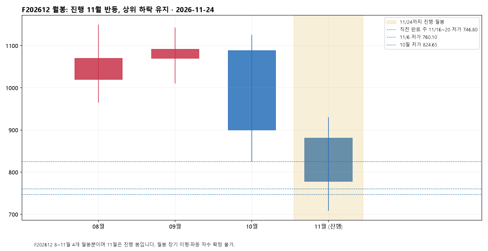
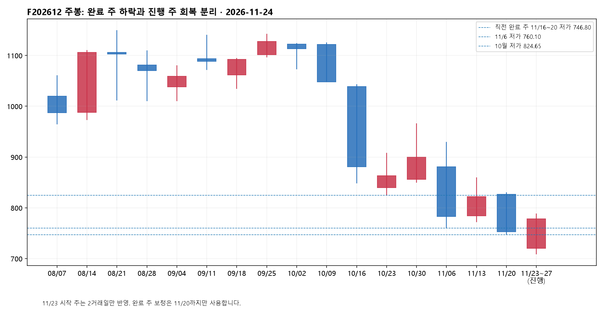
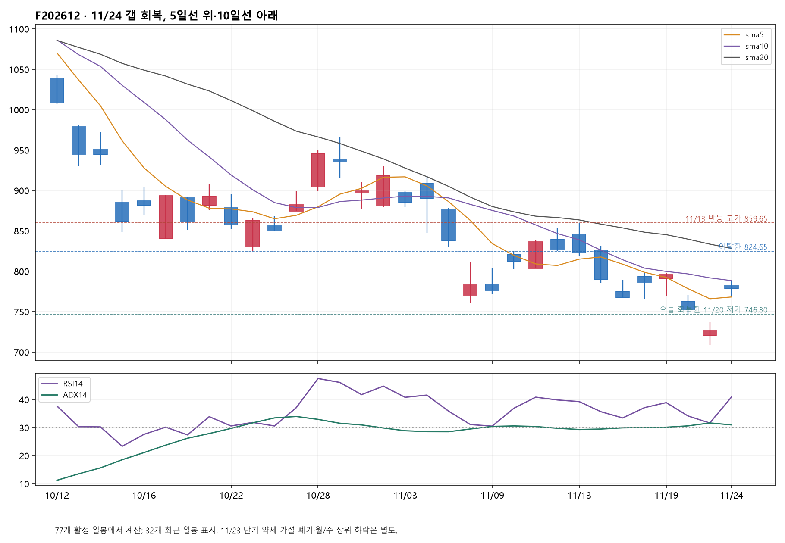
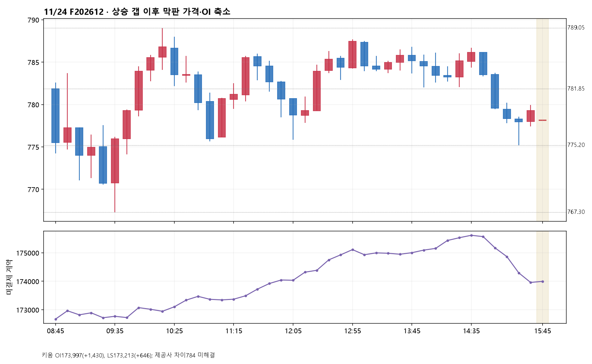
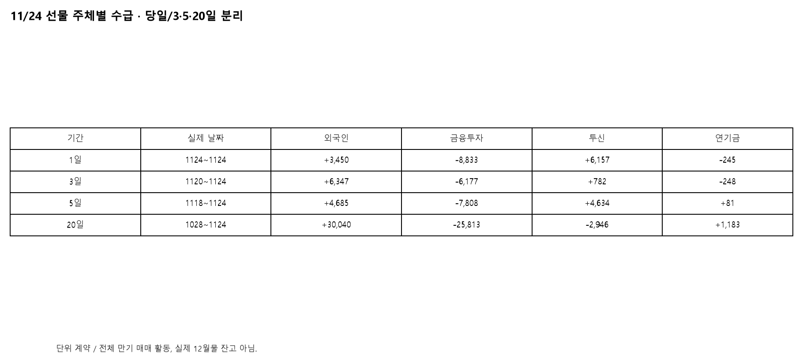
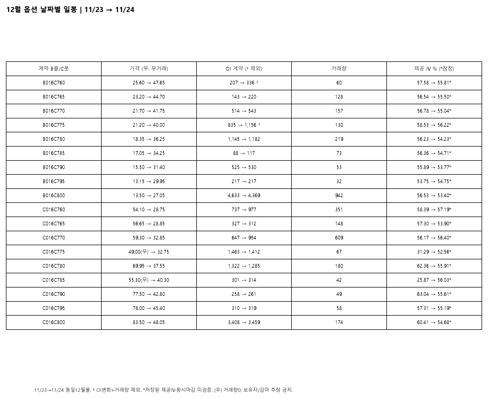

F202612 / A016C000 · 정규장 778.10 · OI 173,997 · 이후 야간 미반영
11/23 단기 하락 가설을 폐기하고 조건부 회복 경로로 바꿨습니다. 키움/LS OI 차이와 CVD 날짜 미확정은 분리했고, 18개 옵션의 품질 제외 및 주체별 1·3·5·20일 수급을 새 기준일로 갱신했습니다.
782.05~783.75 → 787.70~789.05. 789.05 일봉 돌파·재지지 후 798.00~798.05. 775.20 이탈이면 약화, 767.30 이탈·재저항이면 당일 저점 반등 가설 폐기
770.55~771.30 → 765.75~767.30. 781.85 회복·재지지 시 약화, 789.05 일봉 돌파·재지지 시 이 단기 실패 경로 폐기
조건 대기. 월·주 하락과 일봉 급반등·분봉 조정을 동시에 유지. 미래 확률 산정 불가
11/24 F202612 정규장 종가는 778.10, 전일 726.65 대비 +51.45포인트(+7.08%)예요. 시가는 781.85였고 시가 대비 종가는 -3.75포인트예요. 어제의 730.45 아래 약세 경로와 737.25·746.80~752.75 저항 가설은 갭 상승과 종가 회복으로 폐기합니다. 다음 정규장 선호 경로는 775.20~775.85를 10분봉으로 지키고 779.95~781.85를 회복·재지지한 뒤, 782.05~783.75 → 787.70~789.05 순서로 회복하는 조건부 반등 연장입니다. 789.05 위 일봉 마감과 다음 눌림 재지지까지 확인하면 798.00~798.05가 다음 확인 구간이에요. 반대로 775.20 아래 10분봉 마감·반등 재저항이면 770.55~771.30 → 765.75~767.30 재시험으로 전환합니다. 당일 저점 767.30 이탈은 오늘 반등 저점 유지 가설을 무효화하고, 708.25는 더 큰 저점 후보의 최종 경계입니다. 외국인 현물·선물 매수와 투신 매수는 회복 근거지만 금융투자 선물 매도·막판 OI 축소는 반대 근거예요. 확률은 산정할 수 없습니다.
직전 게시본(11/23)은 730.45 재저항·725.20 이탈을 선호했고, 737.25 돌파 시 대안으로 바꾸기로 했습니다. 오늘 781.85 갭 시가와 778.10 종가가 두 경계 및 746.80~752.75를 모두 넘었으므로 그 단기 하락 가설을 폐기합니다. 갭으로 건너뛴 가격을 실제 체결 가능했던 매매 성과로 계산하지 않습니다. 새 선호는 11/23 저점 708.25에서 시작한 회복이 767.30 위에서 이어지는 가설이며, 775.20 방어 → 781.85 회복 → 789.05 돌파 순서가 필요합니다. 대안은 상위 하락 안의 급반등이 789.05에서 막히고 775.20·767.30을 순차 이탈하는 경로입니다. 상위 기준점 10월 고점 1125.55, 11/2 반등 고점 930.00, 11/13 고점 859.65와 11/23 저점 708.25를 보존합니다. 월·주봉 하락 구조 속 분봉 회복이라는 차수 차이를 유지하며, 5파 완성이나 새 상승 3파로 확정하지 않습니다. 세부 1·2·3·4·5파의 중첩·최단파 하드룰을 검증할 완전한 분봉 구간이 없어 차수 미확정입니다. 708.25→789.05의 산술 되돌림 38.2%는 758.18, 61.8%는 739.12지만 보조 계산값이며 실측 지지나 실제 보유 원가는 아닙니다.
0787 수량·금액 54개 순매매 셀을 12개 원본 화면과 대조했습니다. 오늘 선물 순매매는 외국인 +3,450계약, 기관계 -3,332계약, 개인 -137계약입니다. 기관 내부는 금융투자 -8,833, 투신 +6,157, 연기금 -245, 보험 -388, 은행 -23계약으로 서로 다릅니다. 기관계와 금융투자·투신을 다시 더하지 않습니다. 최근 1/3/5/20일 외국인은 +3,450/+6,347/+4,685/+30,040, 금융투자는 -8,833/-6,177/-7,808/-25,813, 투신은 +6,157/+782/+4,634/-2,946계약입니다. 투신은 20일 순매도 속 최근 매수 전환이어서 지속성 확인이 필요합니다. 외국인의 현물 1/3/5/20일 수급은 +7,605/-5,916/-12,645/-141,416(LS 원천 금액 단위)으로 당일 매수와 누적 매도를 구분합니다. 오늘 외국인 주식선물은 -25,130계약으로 지수선물 매수와 방향이 다릅니다. 순매매는 신규·청산 혼합 거래량이며 보유 포지션이나 매수 평단을 뜻하지 않습니다.
당일 외국인·투신 현물 매수와 외국인·투신 지수선물 매수가 함께 확인됐습니다. 별도 KOSPI200 200종목 자료에서 삼성전자·SK하이닉스를 뺀 198종목의 외국인 순매매는 +314,841(그 자료 원천 단위), 116종목 순매수·82종목 순매도입니다. 두 종목 제외 기관은 +638,025, 투신은 +103,344이나 투신은 순매수 90종목·순매도 103종목·0인 5종목으로 금액 합의와 종목 수 합의가 다릅니다. 이는 KOSPI200 현재 구성의 관찰이며 코스피 전체 시장 폭이나 동일 고정 구성 누적이 아닙니다. 프로그램 총순매매는 당일 +376,613(차익 +46,168·비차익 +330,445), 3일 -556,564, 5일 -714,977(원천 단위)입니다. 당일 개선을 누적 유입 완료로 바꾸지 않습니다. LS 저장 마감 비교 베이시스는 -0.58로 전일 -4.18보다 할인폭이 3.60포인트 축소됐지만, 현물 15:30·선물 15:45의 비동시 비교입니다. 제공 이론 베이시스 +1.14 대비 괴리 -1.72는 산식 독립 검증이 안 된 보조값이며 차익거래 원인을 확정하지 않습니다. 현물·프로그램·선물은 같은 거래의 연관 지표일 수 있어 독립 투표처럼 가산하지 않습니다.
키움 10분봉 표시시각 기준 08:45→09:55 가격 775.50→783.95(+8.45), OI +402; 09:55→11:55 가격 -3.30·OI +970; 11:55→14:35 가격 +5.50·OI +1,569였습니다. 14:35→15:25에는 786.15→779.30(-6.85)와 OI -1,655가 함께 나타나 막판 계약 축소가 확인됩니다. 15:45 단일가는 778.10·OI 173,997로 직전 표시봉 대비 가격 -1.20·OI +38입니다. 오전부터 종일 동일한 신규 롱 또는 숏 유입으로 단순화할 수 없습니다. 가격 하락·OI 감소는 청산 우세와 양립하지만 어느 주체의 롱 청산인지는 확인되지 않습니다. 15:25→15:45 사이를 정상 10분봉 두 개로 채우지 않고 마지막 단일가를 별도 표시합니다. 주체별 장중 전환을 검증할 오늘 동일시각 수급 스냅샷은 부족해 마감 순매매를 각 시간대의 원인으로 배분하지 않습니다.
키움 현 시계열은 전일 OI 172,567→오늘 173,997(+1,430계약), LS 날짜 일봉과 저장 종가 스냅샷은 172,567→173,213(+646계약)입니다. 오늘 두 제공사 차이 784계약은 미해결이며 서로 합치지 않습니다. 어제 보존한 키움 원본 OI 173,394와 오늘 재조회 전일값 172,567도 -827계약 달라, 보존 원본 대비 변화는 +603계약으로 따로 남깁니다. 원인이 확정되지 않아 하나의 확정 순증 숫자나 신규 롱 규모를 만들지 않습니다. 가격 상승·양쪽 원천의 OI 증가 관찰은 회복 중 계약 확장과 양립하지만 보유자 방향의 증명이 아닙니다. 차월 F202703(A0173000)은 종가 770.80, 거래량 144, OI 8,399이고 전일 7,856 대비 +543이 거래량보다 큽니다. 차월 OI 변화의 세션·정정 범위는 미해결로 롤오버 방향 계산에서 제외합니다. 근월과 차월 보유량을 하나의 연속 포지션으로 합산하지 않습니다.
현재 보완 자료는 12월물 콜·풋 760~800 행사가 18계약의 11/23→11/24 날짜 일봉입니다. 각 코드·만기·콜풋·가격·OI·거래량을 저장 EOD 스냅샷과 대조했으며 원천 OI 커버리지는 32.77%에 그칩니다. B016C775의 OI +321/거래량 130, B016C760의 +129/60은 증가분이 거래량보다 커 방향 해석에서 제외합니다. C016C785·C016C775는 전일 거래량 0으로 전일 가격을 체결 가격처럼 해석하지 않습니다. 두 날짜 제공 IV는 참고 표로 남기되 실제 체결·호가 시각이 확인되지 않아 동시 마감 IV 변화나 스큐 변화로 확정하지 않습니다. 키움 대표 IV는 76.19→79.56, 콜 대표 IV 60.20→53.74, 풋 대표 IV 96.87→105.68로 서로 달라 같은 행사가의 IV와 구분합니다. 오늘 외국인은 콜 +5,573계약/+134억원, 풋 +1,289계약/-44억원으로 수량과 금액 신호도 다릅니다. 풋 수량 증가를 하락 베팅, 기관 콜·풋을 감마 포지션으로 단정하지 않습니다. 전체 체인·보유자별 매수/매도 잔고가 없어 실제 딜러 감마, 감마플립, 최대고통, 잔존 포지션과 평단은 판단 불가입니다.
공식 계약명세의 월물 두 번째 목요일 규칙과 KRX 2026 달력을 대조했습니다. 11월 월물 옵션 만기는 11/12에 지났고, 현재 F202612와 12월 월물 옵션의 만기는 12/10입니다. 오늘 11/24를 11월 만기일로 표시하거나 12월 선물 만기와 혼합하지 않습니다. 월·목 위클리도 별도 계약이며 11/23 월요일 만기 뒤 첫 거래일이라는 달력상 위치만 확인할 수 있습니다. 위클리 행사가별 만기 전후 완전한 체인과 보유자 잔고는 없어서 오늘 갭 상승을 만기 청산·숏커버 때문이라고 확정할 수 없습니다. 만기 뒤 지속성은 다음 정규장의 현물·프로그램 매수 유지와 775.20 지지·781.85 회복, 근월/차월 검증 가능한 거래량·OI로 다시 확인합니다.
완료 주 보정은 10/12~11/20의 6개 완료 주까지만 사용하며 11/23~24 진행 주를 학습에 넣지 않았습니다. 제한된 동행 해석 배율은 현물 외국인 1.157·금융투자 0.954·투신 1.182·연기금 0.988·개인 0.811, 선물 외국인 0.924·금융투자 0.891·투신 1.157·연기금 1.013·개인 0.930입니다. 가격 설명의 보조 배율이며 인과 영향력·매수 확률이 아닙니다. 다음 날 예측 배율은 모두 1.000으로 유지합니다. 10/12~11/24의 관찰 중 결과가 나온 외국인·투신 현물 동반 매수+당일 상승 다음 날 상승은 3/7(42.9%, 상승일 기준 4/12=33.3%), 선물 동반 매수+당일 상승 다음 날 상승은 1/3(33.3%)입니다. 작은 선택 표본의 관측 비율이고 미래 확률로 쓰지 않습니다. 오늘 신호의 다음 거래일 결과는 PENDING입니다. 기관계와 세부 주체 중복 가산 및 옵션 가중치 산정은 하지 않습니다.
가격은 F202612 개별 계약의 검증된 활성 일봉 2026/08/03~11/24 77개와 같은 계약 분봉을 사용했습니다. 월봉은 8~11월, 주봉은 같은 일봉 재표본화이며 11월·11/23 시작 주는 진행 봉입니다. 오늘 완료 일봉과 원천 표시시각 08:45~15:45의 42개 10분봉/단일가를 구분합니다. 수급 최근 3일은 11/20·23·24, 5일은 11/18·19·20·23·24, 20일은 10/28~11/24입니다. 9월 선물 만기 뒤 9/11~11/24 49거래일 관찰 합계는 외국인 +36,626, 기관 -34,606, 금융투자 -25,441, 투신 -5,741, 연기금 +1,189계약입니다. 다만 LS 투자자 수급은 전체 만기 거래 활동이어서 이를 12월물 누적 보유 포지션으로 바꾸지 않습니다. 11/23 현물 재조회 값 4개가 보존 원본과 달라 수정 원인은 미해결로 남기고, 이번 누적은 동일 조회판 시계열로 계산하며 이전 판도 보존합니다.
보조 현물은 같은 날짜 검증한 KOSPI 종가 5006.03, KOSPI200 778.68입니다. 선물 778.10과 현물 지수의 가격·종가 시각을 섞지 않습니다. 기존 KOSPI·KOSDAQ 다중 시간대 파일은 11/23, 미국 다중 시간대 본문은 11/12인데 검증파일은 11/23 PARTIAL이어서 오늘 확인값으로 사용하지 않습니다. 니케이·나스닥·SOX·다우의 현재 완료 월/주/일/10분 비교와 KOSDAQ 오늘 전체 폭은 자료 부족입니다. 지수 방향 연구·14단계 환경자료도 11/23이므로 오늘 자동 방향 근거에서 제외합니다. Squeeze/ADX 보조 연구를 사용하지 않았으며 과거 F202609 26/36과 독립 KOSPI200 30/66 실패를 현재 예측력으로 승격하지 않습니다. 이 보조층 제외는 검증된 오늘 선물 원천의 실패를 뜻하지 않습니다.

완료 10월 O1088.35/H1125.55/L824.65/C899.45 뒤 진행 11월은 O880.80/H930.00/L708.25/C778.10입니다. 오늘 반등에도 10월 저가 아래입니다.

완료 주 11/16~20은 O826.50/H830.80/L746.80/C752.75. 진행 주 11/23~24는 O719.90/H789.05/L708.25/C778.10으로 직전 완료 주 저가·종가를 회복했습니다.

직전 게시본(11/23)은 730.45 재저항·725.20 이탈을 선호했고, 737.25 돌파 시 대안으로 바꾸기로 했습니다. 오늘 781.85 갭 시가와 778.10 종가가 두 경계 및 746.80~752.75를 모두 넘었으므로 그 단기 하락 가설을 폐기합니다. 갭으로 건너뛴 가격을 실제 체결 가능했던 매매 성과로 계산하지 않습니다. 새 선호는 11/23 저점 708.25에서 시작한 회복이 767.30 위에서 이어지는 가설이며, 775.20 방어 → 781.85 회복 → 789.05 돌파 순서가 필요합니다. 대안은 상위 하락 안의 급반등이 789.05에서 막히고 775.20·767.30을 순차 이탈하는 경로입니다. 상위 기준점 10월 고점 1125.55, 11/2 반등 고점 930.00, 11/13 고점 859.65와 11/23 저점 708.25를 보존합니다. 월·주봉 하락 구조 속 분봉 회복이라는 차수 차이를 유지하며, 5파 완성이나 새 상승 3파로 확정하지 않습니다. 세부 1·2·3·4·5파의 중첩·최단파 하드룰을 검증할 완전한 분봉 구간이 없어 차수 미확정입니다. 708.25→789.05의 산술 되돌림 38.2%는 758.18, 61.8%는 739.12지만 보조 계산값이며 실측 지지나 실제 보유 원가는 아닙니다.

키움 10분봉 표시시각 기준 08:45→09:55 가격 775.50→783.95(+8.45), OI +402; 09:55→11:55 가격 -3.30·OI +970; 11:55→14:35 가격 +5.50·OI +1,569였습니다. 14:35→15:25에는 786.15→779.30(-6.85)와 OI -1,655가 함께 나타나 막판 계약 축소가 확인됩니다. 15:45 단일가는 778.10·OI 173,997로 직전 표시봉 대비 가격 -1.20·OI +38입니다. 오전부터 종일 동일한 신규 롱 또는 숏 유입으로 단순화할 수 없습니다. 가격 하락·OI 감소는 청산 우세와 양립하지만 어느 주체의 롱 청산인지는 확인되지 않습니다. 15:25→15:45 사이를 정상 10분봉 두 개로 채우지 않고 마지막 단일가를 별도 표시합니다. 주체별 장중 전환을 검증할 오늘 동일시각 수급 스냅샷은 부족해 마감 순매매를 각 시간대의 원인으로 배분하지 않습니다.

0787 수량·금액 54개 순매매 셀을 12개 원본 화면과 대조했습니다. 오늘 선물 순매매는 외국인 +3,450계약, 기관계 -3,332계약, 개인 -137계약입니다. 기관 내부는 금융투자 -8,833, 투신 +6,157, 연기금 -245, 보험 -388, 은행 -23계약으로 서로 다릅니다. 기관계와 금융투자·투신을 다시 더하지 않습니다. 최근 1/3/5/20일 외국인은 +3,450/+6,347/+4,685/+30,040, 금융투자는 -8,833/-6,177/-7,808/-25,813, 투신은 +6,157/+782/+4,634/-2,946계약입니다. 투신은 20일 순매도 속 최근 매수 전환이어서 지속성 확인이 필요합니다. 외국인의 현물 1/3/5/20일 수급은 +7,605/-5,916/-12,645/-141,416(LS 원천 금액 단위)으로 당일 매수와 누적 매도를 구분합니다. 오늘 외국인 주식선물은 -25,130계약으로 지수선물 매수와 방향이 다릅니다. 순매매는 신규·청산 혼합 거래량이며 보유 포지션이나 매수 평단을 뜻하지 않습니다.

완료 주 보정은 10/12~11/20의 6개 완료 주까지만 사용하며 11/23~24 진행 주를 학습에 넣지 않았습니다. 제한된 동행 해석 배율은 현물 외국인 1.157·금융투자 0.954·투신 1.182·연기금 0.988·개인 0.811, 선물 외국인 0.924·금융투자 0.891·투신 1.157·연기금 1.013·개인 0.930입니다. 가격 설명의 보조 배율이며 인과 영향력·매수 확률이 아닙니다. 다음 날 예측 배율은 모두 1.000으로 유지합니다. 10/12~11/24의 관찰 중 결과가 나온 외국인·투신 현물 동반 매수+당일 상승 다음 날 상승은 3/7(42.9%, 상승일 기준 4/12=33.3%), 선물 동반 매수+당일 상승 다음 날 상승은 1/3(33.3%)입니다. 작은 선택 표본의 관측 비율이고 미래 확률로 쓰지 않습니다. 오늘 신호의 다음 거래일 결과는 PENDING입니다. 기관계와 세부 주체 중복 가산 및 옵션 가중치 산정은 하지 않습니다.

현재 보완 자료는 12월물 콜·풋 760~800 행사가 18계약의 11/23→11/24 날짜 일봉입니다. 각 코드·만기·콜풋·가격·OI·거래량을 저장 EOD 스냅샷과 대조했으며 원천 OI 커버리지는 32.77%에 그칩니다. B016C775의 OI +321/거래량 130, B016C760의 +129/60은 증가분이 거래량보다 커 방향 해석에서 제외합니다. C016C785·C016C775는 전일 거래량 0으로 전일 가격을 체결 가격처럼 해석하지 않습니다. 두 날짜 제공 IV는 참고 표로 남기되 실제 체결·호가 시각이 확인되지 않아 동시 마감 IV 변화나 스큐 변화로 확정하지 않습니다. 키움 대표 IV는 76.19→79.56, 콜 대표 IV 60.20→53.74, 풋 대표 IV 96.87→105.68로 서로 달라 같은 행사가의 IV와 구분합니다. 오늘 외국인은 콜 +5,573계약/+134억원, 풋 +1,289계약/-44억원으로 수량과 금액 신호도 다릅니다. 풋 수량 증가를 하락 베팅, 기관 콜·풋을 감마 포지션으로 단정하지 않습니다. 전체 체인·보유자별 매수/매도 잔고가 없어 실제 딜러 감마, 감마플립, 최대고통, 잔존 포지션과 평단은 판단 불가입니다.
2026-11-24T23:21:25.501930+09:00 · 조건부 해설, 자동 주문·비중 변경 아님